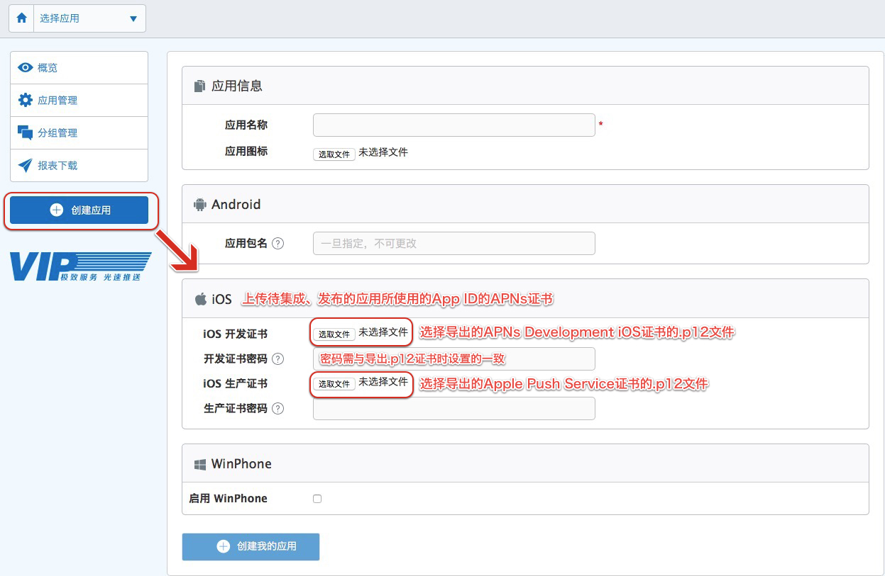
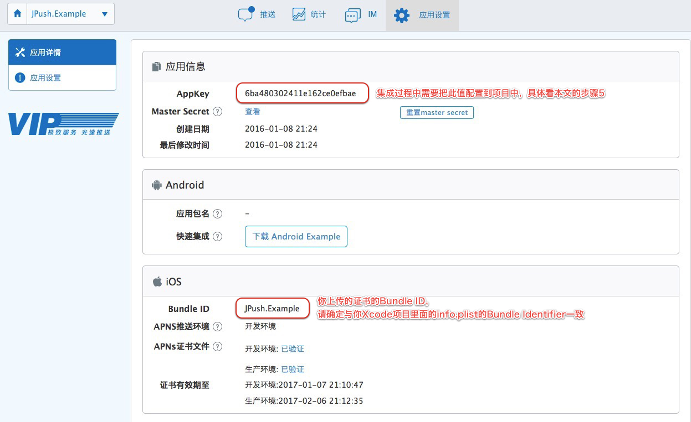
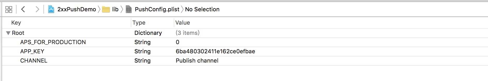
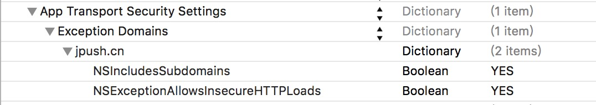

iOS SDK 集成指南
使用提示
本文匹配的 SDK版本：r2.1.5 以后。
查看最近更新了解最新的SDK更新情况。
产品功能说明
极光推送（JPush）是一个端到端的推送服务，使得服务器端消息能够及时地推送到终端用户手机上，让开发者积极地保持与用户的连接，从而提高用户活跃度、提高应用的留存率。极光推送客户端支持 Android, iOS 两个平台。
本 iOS SDK 方便开发者基于 JPush 来快捷地为 iOS App 增加推送功能，减少集成 APNs 需要的工作量、开发复杂度。
主要功能
- 为 JPush Server 上报 Device Token，免除开发者管理 Device Token 的麻烦
- 支持iOS APNs推送
- 前台运行时，可接收由JPush下发的（透传的）自定义消息
- 灵活管理接收用户：Tag（标签分组）、Alias（用户别名）、RegistrationID（设备注册ID）
主要特点
- 集成简单
- iOS SDK 集成后，服务器端向 iOS 设备推送简单方便
集成压缩包内容
包名为JPush-iOS-SDK-{版本号}
- lib文件夹：包含头文件 JPUSHService.h，静态库文件jpush-ios-x.x.x.a ，支持的iOS版本为 5.0 及以上版本。（请注意：模拟器不支持APNs）
- pdf文件：集成指南
- demo文件夹：示例
开发环境
- 使用Xcode 6及以上版本可以使用新版Push SDK，XCode 5环境下需要运行旧版本SDK(1.7.4)
SDK集成步骤
1、在JPush Portal上创建应用
- 在 JPush的管理Portal 上创建应用并上传APNs证书。如果对APNs证书不太了解 请参考： iOS 证书设置指南

- 创建成功后自动生成 AppKey 用以标识该应用。

2、导入API开发包到应用程序项目
- 将SDK包解压，在XCode中选择“Add files to 'Your project name'...”，将解压后的lib子文件夹（包含JPUSHService.h、jpush-ios-x.x.x.a）添加到你的工程目录中。
3、必要的框架
- CFNetwork.framework
- CoreFoundation.framework
- CoreTelephony.framework
- SystemConfiguration.framework
- CoreGraphics.framework
- Foundation.framework
- UIKit.framework
- Security.framework
- Xcode7需要的是libz.tbd；Xcode7以下版本是libz.dylib
- Adsupport.framework (获取IDFA需要；如果不使用IDFA，请不要添加)
4、Build Settings
如果你的工程需要支持小于7.0的iOS系统，请到Build Settings 关闭 bitCode 选项，否则将无法正常编译通过。
- 设置 Search Paths 下的 User Header Search Paths 和 Library Search Paths，比如SDK文件夹（默认为lib）与工程文件在同一级目录下，则都设置为"$(SRCROOT)/{静态库所在文件夹名称}"即可。
5、创建并配置PushConfig.plist文件
2.1.0 版本开始，新增了带参数的setupWithOption初始化方法，可通过此方法等参数传入AppKey等信息。1.8.8及之前版本的 JPush SDK只能通过PushConfig.plist配置AppKey等信息。
在你的工程中创建一个新的Property List文件，并将其命名为PushConfig.plist，文件所含字段如下：
- CHANNEL
- 指明应用程序包的下载渠道，为方便分渠道统计，具体值由你自行定义，如：App Store。
- APP_KEY
- 填写管理Portal上创建应用后自动生成的AppKey值。请确保应用内配置的 AppKey 与第1步在 Portal 上创建应用后生成的 AppKey 一致。
- APS_FOR_PRODUCTION
- 1.3.1版本新增，用于标识当前应用所使用的APNs证书环境。
- 0 (默认值)表示采用的是开发证书，1 表示采用生产证书发布应用。
- 注：此字段的值要与Build Settings的Code Signing配置的证书环境一致。
- 在1.2.2或之前版本的配置文件中，有 TEST_MODE 这个键，新版的SDK不再使用，可以将它删除。
PushConfig.plist文件示例图:

6、添加代码
2.1.0版本开始,API类名为JPUSHService，不再使用原先的APService。
允许XCode7支持Http传输方法
如果用的是Xcode7时，需要在App项目的plist手动配置下key和值以支持http传输:
选择1：根据域名配置
- 在项目的info.plist中添加一个Key：NSAppTransportSecurity，类型为字典类型。
- 然后给它添加一个NSExceptionDomains，类型为字典类型；
- 把需要的支持的域添加給NSExceptionDomains。其中jpush.cn作为Key，类型为字典类型。
- 每个域下面需要设置2个属性：NSIncludesSubdomains、NSExceptionAllowsInsecureHTTPLoads。 两个属性均为Boolean类型，值分别为YES、YES。
如图：

选择2：全局配置
<key>NSAppTransportSecurity</key>
<dict>
<key>NSAllowsArbitraryLoads</key>
<true/>
</dict>
集成所需API
APIs 主要集中在 JPUSHService 接口类里。
-
初始化JPush方法分为三个：
- 1.8.8及以下版本使用的是已过期的初始化方法。升级到2.1.5的老用户仍可继续使用旧的初始化方法。
- 2.1.0版本开始提供带appkey等参数的初始化方法。使用此方法无需再添加PushConfig.plist配置JPush的AppKey等字段。
- 2.1.5版本开始提供带appkey以及IDFA等参数的初始化方法。使用此方法无需再添加PushConfig.plist配置JPush的AppKey等字段。
使用建议:
三个初始化 JPush的方法同时存在，以第一个被调用的方法为准。
@interface JPUSHService : NSObject
// init Push
// init Push(<= 1.8.8版本的SDK的注册方法）
+ (void)setupWithOption:(NSDictionary *)launchingOption;
// init Push(2.1.0版本的SDK新增的注册方法)
+ (void)setupWithOption:(NSDictionary *)launchingOption
appKey:(NSString *)appKey
channel:(NSString *)channel
apsForProduction:(BOOL)isProduction;
// init Push(2.1.5版本的SDK新增的注册方法，改成可上报IDFA，如果没有使用IDFA直接传nil )
+ (void)setupWithOption:(NSDictionary *)launchingOption
appKey:(NSString *)appKey
channel:(NSString *)channel
apsForProduction:(BOOL)isProduction
advertisingIdentifier:(NSString *)advertisingId;
// 注册APNS类型
+ (void)registerForRemoteNotificationTypes:(NSUInteger)types
categories:(NSSet *)categories;
// upload device token
+ (void)registerDeviceToken:(NSData *)deviceToken;
// handle notification recieved
+ (void)handleRemoteNotification:(NSDictionary *)remoteInfo;
调用代码
监听系统事件，相应地调用 JPush SDK 提供的 API 来实现功能。
以下 ３ 个事件监听与调用 JPush SDK API 都是必须的。请直接复制如下代码块里，注释为 "Required" 的行，到你的应用程序代理类里相应的监听方法里。
- (BOOL)application:(UIApplication *)application
didFinishLaunchingWithOptions:(NSDictionary *)launchOptions {
self.window = [[UIWindow alloc] initWithFrame:[[UIScreen mainScreen] bounds]];
self.window.backgroundColor = [UIColor whiteColor];
[self.window makeKeyAndVisible];
NSString *advertisingId = [[[ASIdentifierManager sharedManager] advertisingIdentifier] UUIDString];
//Required
if ([[UIDevice currentDevice].systemVersion floatValue] >= 8.0) {
//可以添加自定义categories
[JPUSHService registerForRemoteNotificationTypes:(UIUserNotificationTypeBadge |
UIUserNotificationTypeSound |
UIUserNotificationTypeAlert)
categories:nil];
} else {
//categories 必须为nil
[JPUSHService registerForRemoteNotificationTypes:(UIRemoteNotificationTypeBadge |
UIRemoteNotificationTypeSound |
UIRemoteNotificationTypeAlert)
categories:nil];
}
//Required
// 如需继续使用pushConfig.plist文件声明appKey等配置内容，请依旧使用[JPUSHService setupWithOption:launchOptions]方式初始化。
[JPUSHService setupWithOption:launchOptions appKey:appKey
channel:channel
apsForProduction:isProduction
advertisingIdentifier:advertisingId];
return YES;
}
- (void)application:(UIApplication *)application
didRegisterForRemoteNotificationsWithDeviceToken:(NSData *)deviceToken {
/// Required - 注册 DeviceToken
[JPUSHService registerDeviceToken:deviceToken];
}
- (void)application:(UIApplication *)application didReceiveRemoteNotification:(NSDictionary *)userInfo {
// Required,For systems with less than or equal to iOS6
[JPUSHService handleRemoteNotification:userInfo];
}
- (void)application:(UIApplication *)application didReceiveRemoteNotification:(NSDictionary *)userInfo fetchCompletionHandler:(void (^)(UIBackgroundFetchResult))completionHandler {
// IOS 7 Support Required
[JPUSHService handleRemoteNotification:userInfo];
completionHandler(UIBackgroundFetchResultNewData);
}
- (void)application:(UIApplication *)application didFailToRegisterForRemoteNotificationsWithError:(NSError *)error {
//Optional
NSLog(@"did Fail To Register For Remote Notifications With Error: %@", error);
}
7、IDFA
r2.1.5版本增加一个上传IDFA字符串的接口
+ (void)setupWithOption:(NSDictionary *)launchingOption
appKey:(NSString *)appKey
channel:(NSString *)channel
apsForProduction:(BOOL)isProduction
advertisingIdentifier:(NSString *)advertisingId;
如果不使用IDFA，仍可使用接口
+ (void)setupWithOption:(NSDictionary *)launchingOption
appKey:(NSString *)appKey
channel:(NSString *)channel
apsForProduction:(BOOL)isProduction;
8、监听通知
建议开发者加上API里面提供下面 5 种类型的通知：
extern NSString * const kJPFNetworkDidSetupNotification; // 建立连接
extern NSString * const kJPFNetworkDidCloseNotification; // 关闭连接
extern NSString * const kJPFNetworkDidRegisterNotification; // 注册成功
extern NSString * const kJPFNetworkDidLoginNotification; // 登录成功
温馨提示：
Registration id 需要在执行到kJPFNetworkDidLoginNotification的方法里获取
extern NSString * const kJPFNetworkDidReceiveMessageNotification; // 收到自定义消息(非APNS)
其中，kJPFNetworkDidReceiveMessageNotification传递的数据可以通过NSNotification中的userInfo方法获取，包括标题、内容、extras信息等
高级功能
请参考文档：iOS SDK API
技术支持
邮件联系：support@jpush.cn